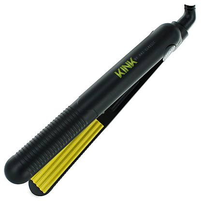

<main role="main">
	
<div class="grid">	
		
	<div class="unit unit-s-1 unit-m-1-2 unit-l-1-3">
	<div class="unit-spacer">	
	<h2 class="trending-now trending-now-colour imgbox-head delta">Curling Wands.</h2>
			<p class="colour-fig"><i>June 4th, 2013</i></p>
			
			<div class="blog-1 blog-colour">
				<p class="blog-1-p cblog-1-p imgbox-text">These tools may look funny but they're all the rage.</p>
				<p class="blog-1-p cblog-1-p imgbox-text">Curling wands are the new in-tool! Instead of your standard marcel curling iron, or spring-clip iron, we've come to discover, learn how to use, and fall in love with this updated curling iron— the curling wand.<br> It's a sleek, tube-shaped heating tool that comes in different thicknesses and some that come in a "cone" type shape, that requires a mitt or special heat-protectant glove for your hand.<br> To use this nifty tool you simply grab sections of your hair and physically wrap it around the wand; so that you're moving your hair, not the wand. The results are beautiful, naturally waves (tight or loose depending on hair texture, and wand diameter.)<br>A warning to you long-haired gals out there— they get really hot, so do try to use that glove when needed. Plenty of professional hairstyling companies are producing these hot tools, so keep your eye on the lookout and try one out!</p>	
		<a href="http://www.numeproducts.com" class="tumblr-link">Nume provides exceptional tools available to everyone.</a>
	</div>	
		
			</div>	
	</div>
	
	<div class="unit unit-s-1 unit-m-1-2 unit-l-1-3">	
	<div class="unit-spacer">
	<h2 class="trending-now trending-now-colour imgbox-head delta">Crimpers.</h2>
			<p class="colour-fig"><i>May 7th, 2013</i></p>
			
			<div class="blog-1 blog-colour">
				<p class="blog-1-p cblog-1-p mgbox-text">Too 80s for you?</p>
				<p class="blog-1-p cblog-1-p imgbox-text">Okay, so I may be a complete weirdo, but I bought a crimper this year.<br>What's wrong with that? So it's a little bit 80s but it's not like I'm using it on my entire head. I use it to enhance an updo or to crimp a very small piece of my side-bang once I've straightened the rest of my hair.<br>Crimpers are very similar to flat irons in the look of the appliance, but instead of a flat sleek plate, it's divotted to create tiny waves in your hair with heat.</p>	
	</div>				
		
			</div>	
	</div>	
	
	<div class="unit unit-s-1 unit-m-1-2 unit-l-1-3">	
	<div class="unit-spacer">
	<h2 class="trending-now trending-now-colour imgbox-head delta">Scissor Sharpening.</h2>
			<p class="colour-fig"><i>April 8th, 2013</i></p>
			
			<div class="blog-1 blog-colour">
				<p class="blog-1-p cblog-1-p imgbox-text">Nothing worse than having dull scissors.</p>
				<p class="blog-1-p cblog-1-p imgbox-text">I had to go sharpen my scissors for the first time. I was nervous, but they're good as new again!</p>
				<p class="blog-1-p cblog-1-p imgbox-text">I've heard horror stories of stylists going to get their scissors sharpened and have them come back nicked, or slightly off kilter, so that they're ruined for good. Thing is, when you spend a few hundred on a tool you use daily, you can't afford for that to happen. <br>So as you can see, I was a little apprehensive as I headed down the creaky basement stairs of a grungy downtown shop who's sign read "scissor sharpening." But to my surprise, the guy was friendly, seemd to know what he was doing, even gave me a discount. And of course, everything turned out great. So luckily in the Ottawa area we have a trustworthy scissor sharpener.<br>There are also a few professional salon stores that send off your scissors elsewhere for a higher price. But I got 6 scissors sharpened for only 40$ and they're all great. Can't beat that!</p>	
	</div>				
		
			</div>	
	</div>		
					
</div>	
</main>
